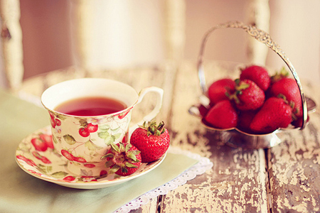

With love for you

Life

有一种思念，是淡淡的幸福；有一种幸福，是常常的牵挂；有一种牵挂，是远远地欣赏。不是所有的梦都能实现；不是所有的话都来得及告诉；不是所有的爱都有结果。
Fashion
丢弃需要勇气，珍藏需要空间请为爱珍重，等到你的发丝有了白雪的痕迹，还能记起曾有这么一段美好，还有这么一个让自己怀念的人，何尝不是一种幸福。
Nature

忘记一个人，并非不再想起，而是偶尔想起，心中却不再有波澜。真正的忘记，是不需要努力的。每个人的电话本里，都会有那么一个你永远不会打，也永远不会删的号码
Sports

能冲刷一切的除了眼泪，就是时间，以时间来推移感情，时间越长，冲突越淡，仿佛不断稀释的茶。得不到你所爱的，就爱你所得的。
丢弃需要勇气，珍藏需要空间
假装坚强，是不想让人看到眼泪；假装开心，是不想让人知道寂寞；假装快乐，是不想让人看出孤独；假装高兴，是不想让人看见伤口；假装甜蜜，是不想让人看见泪水；假装轻松，是不想让人发觉心酸；假装幸福，是不想让人看见疤痕；假装成熟，是不想让人看出无知；假装聪明，是不想让人看到失败。
愈害怕失去的人，愈容易失去。愈想得到，就愈要放手。 放手是很难的，但是别无选择。 世上有很多东西是可以挽回的，比如良知，比如体重。 但不可挽回的东西更多，譬如旧梦，譬如岁月，譬如对一个人的感觉。 放弃一个很爱你的人并不痛苦，放弃一个你很爱的人才是痛苦。